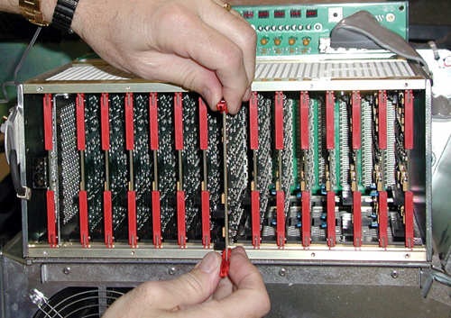
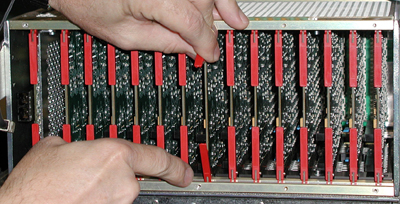

Operating Documentation
Direction 5193855-800, Rev# 4
LS 5.X RT Ltd. Access Service Information Adv
Operating Documentation |
| Required Persons | Preliminary Reqs | Procedure | Finalization |
|---|---|---|---|
| 1 |
Replace suspected faulty board and verify proper operation and Image Quality:
Remove covers.
Access Converter Boards.
Replace part.
Verify operation.
Assemble gantry.
| Item | Qty | Effectivity | Part# | Manufacturer | |
|---|---|---|---|---|---|
| Field ESD Kit | 1 | - | - | - | |
| DAS/Detector Service Kit | 1 | - | - | - | |
| Item | Qty | Effectivity | Part# | Manufacturer | |
|---|---|---|---|---|---|
| GDAS(4/8) Converter Board | 1 | - | - | - | |
| Follow ALL Electro-Static Discharge procedures. Always use ESD Wrist Strap and grounding cords. The use of a ground Monitor is suggested. | |
| Follow ALL Electro-Static Discharge procedures. Always use ESD Wrist Strap and grounding cords. The use of a ground Monitor is suggested. | |
Position the table to its lowest position.
Remove gantry right side cover.
| Always turn OFF the HVDC before the 120 VAC. Turning OFF 120 VAC power before HVDC power can result in equipment damage. | |
Turn OFF Axial Enable, HVDC, and 120VAC switches on the Service Switch panel.
Lock the gantry in position, using the rotational lock.
Remove appropriate chassis cover.
When working in the Right chassis, the fiber-optic cable must first be removed from the Transmit (“TX”) port (see Illustration 1).
Left and Right chassis have 6 captive screws.
Center chassis has 8 captive screws.
Illustration 1: Right DAS Chassis

Slide Converter board out of chassis.
Lift both red ejection tabs and the board will disengage from backplane connection.
Illustration 2: Use Ejector Tabs to Remove Converter Cards From Chassis

Continue sliding board straight out and place into anti-static bag.
| Follow ALL Electro-Static Discharge procedures. Always use ESD Wrist Strap and grounding cords. The use of a ground Monitor is suggested. | |
Remove New Converter Board from anti-static bag.
Align Converter board edges to card guides in Chassis.
Slide the board into the chassis until Red ejector tabs align with the card guides.
Illustration 3: Position Card So That Ejector Tabs Fit Into Channel

Fold the Red tabs over to push board into place. Press in on tabs to fully seat card into the backplane connector-the card should move inward an additional millimeter (approximately).
| Card must be fully seated. Failure to fully seat a converter card into DAS backplane may result in the failure of all 128 channels in that converter card. | |
Turn the Gantry 120V power ON, and verify no failures during power-up self-tests, via DCB LED status or System error log.
Reinstall Converter board chassis cover by first engaging all screws, and then tightening.
If replacing cards in the right DAS chassis, reconnect the fiber-optic cable to the transmit (TX) port (see Illustration 1).
If applications software is up, perform a DAS Reset from the Reset Menu.
Disengage rotational lock.
Turn on Axial and HVDC switches.
Perform a DAS Rest from the Reset Menu.
Depending on the fault, let the board warm-up five (5) minutes to verify it fixed the problem, but at least 1 hour before DASTools, FastCal, or Image Quality scans. A cold board may fail Offset Drift or Pop Noise until it is in normal operating temperature ranges.
Verify proper functionality:
Run at least 10 passes of Scan Data Path Diagnostic from Converter Boards.
Run 1 pass of DAS Tools.
Run FastCal, if less than 5 cards replaced.
Run full FastCal and Phantom Cal, if more than 5 cards replaced or if I/Q fails due to replaced boards.
Upon running FastCal the first time, Daily IQ check may fail, and can generally be ignored, previded the images look good.
Take 10 I/Q scans of the 48cm phantom.
Verify fault or reason to replace the board now passes.
Reassemble gantry covers.